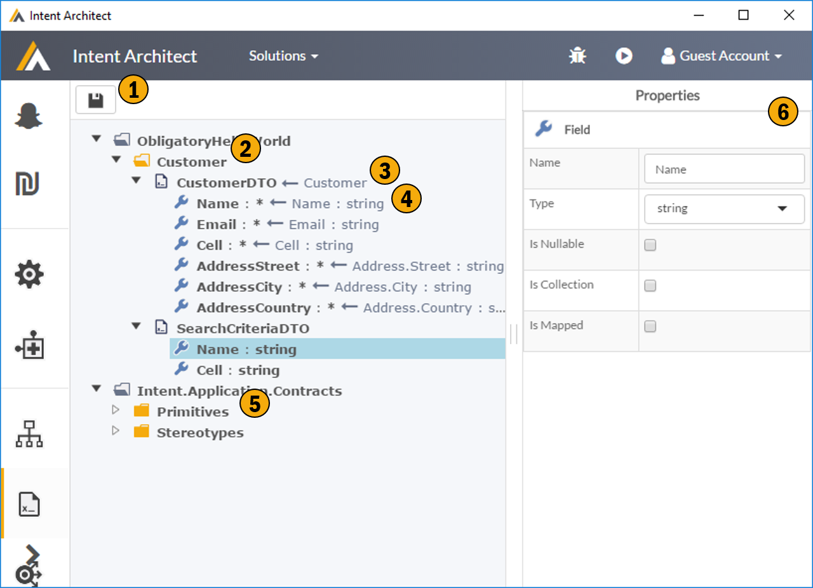

Data Contracts
This screen allows to describe your data contracts or data transfer objects. As with all the meta data describing DSLs this data is technology agnostic and can be extending using your own custom meta data through the stereotype system.

1. Save
2. Folders
This tool supports a dynamic folder structure allowing you store data contract meta data in a structure which makes sense to you.
3. Data Contract
This ia an example of a data contract with it's members. The data contract can optionally be linked to a Domain Class, in this way you can capture you intent that your contracts are in fact based off of your domain model without introducing any run time dependencies. This allows you to better manage the relationship between domain model changes and data contracts.
4. Data Contract Member
Data contract members are the properties of the data contract. Again these can optionally be defined with respect to the domain.
5. Supporting Model Artifacts
These would be the extensions to the data contract model, namely custom data types, enumerations and stereotype definitions. Note these can be manually created or imported by Modules.
6. Property Window
This shows, and allows for editing, the properties of the currently selected item.